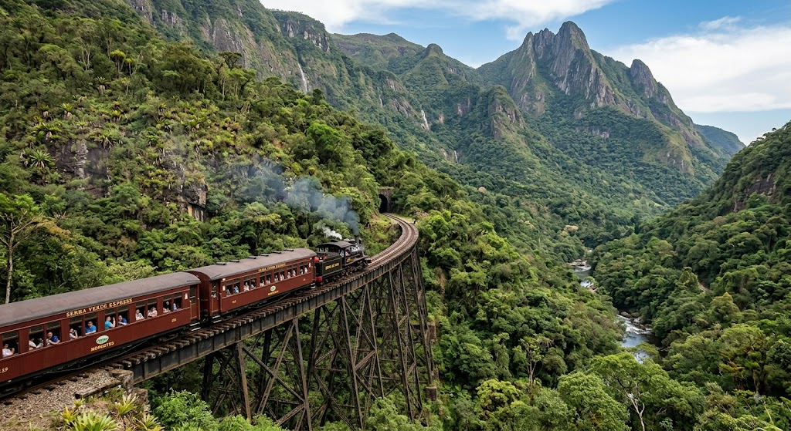
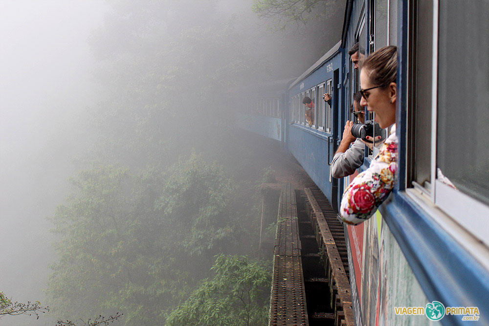
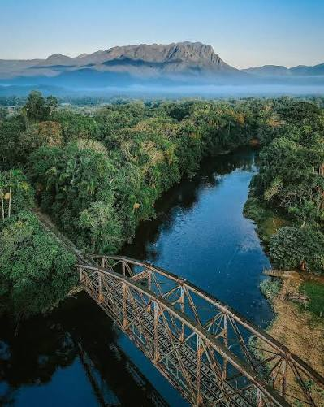

"Descubra os encantos, a história e a rota da ferrovia que liga Curitiba a Morretes"
A viagem de trem pela Serra do Mar Paranaense é reconhecida como um dos passeios ferroviários mais belos e impressionantes do mundo. O trajeto conecta a capital Curitiba à histórica cidade de Morretes, percorrendo cerca de 110 quilômetros pela lendária ferrovia Paranaguá-Curitiba. Inaugurada em 1885 após cinco anos de obras intensas, a via férrea foi uma verdadeira obra-prima da engenharia da época, projetada pelos irmãos Antonio e André Rebouças. A linha atravessa o maior trecho contínuo e preservado de Mata Atlântica do Brasil, proporcionando aos passageiros uma imersão na biodiversidade, na história nacional e na geografia da região.

Entre Trilhos, Viadutos e Abismos
Com duração aproximada de 4 horas, o passeio revela paisagens dramáticas que mesclam montanhas majestosas, vales profundos e cachoeiras exuberantes. A engenharia do século XIX se funde à natureza ao longo de 13 túneis escavados na rocha, 30 pontes e viadutos metálicos importados da Bélgica. O ponto alto do percurso é o Viaduto do Carvalho, construído sobre abismos e fixado na rocha, onde o trem passa dando a sensação de flutuar sobre as copas das árvores. Ao longo da descida, é possível contemplar o imponente Pico do Paraná — o ponto mais alto do Sul do Brasil — e o Conjunto Marumbi, berço do montanhismo brasileiro.

História, Sabores e Tradição à Beira do Rio
Na chegada à aconchegante cidade de Morretes, fundada no século XVIII, os visitantes são recebidos por um centro histórico preservado com casarões coloniais e ruas arborizadas às margens do Rio Nhundiaquara. O grande destaque local é a experiência gastronômica com o Barreado, prato típico paranaense feito com cortes bovinos cozidos lentamente em panela de barro vedada por mais de doze horas, até a carne se desmanchar. O prato é servido com farinha de mandioca, banana e frutos do mar, oferecendo um banquete tradicional após a viagem. Além disso, a cidade é famosa pelas cachaças artesanais, balas de banana e artesanato local.

Guia Prático para Planejar a Sua Viagem
°Operação e Categorias: O trem é operado pela Serra Verde Express e oferece diferentes classes de serviço, desde a categoria Turística até vagões temáticos e de luxo com serviço de bordo, varanda e pet friendly. °Escolha do Assento: Ao realizar a descida de Curitiba rumo a Morretes, os assentos do lado esquerdo do trem oferecem a melhor vista panorâmica dos desfiladeiros, abismos e viadutos. °Retorno pela Estrada da Graciosa: Para complementar o passeio, uma estratégia comum é fazer o trajeto de descida de trem e retornar a Curitiba de ônibus, van ou carro pela Estrada da Graciosa (PR-410), uma via histórica cercada por hortênsias, recantos paranaenses e mirantes naturais.